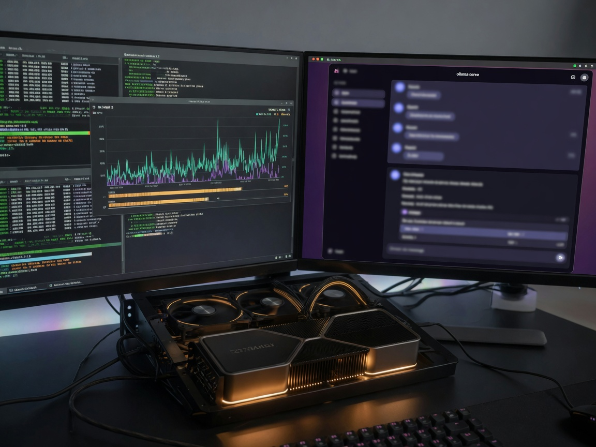
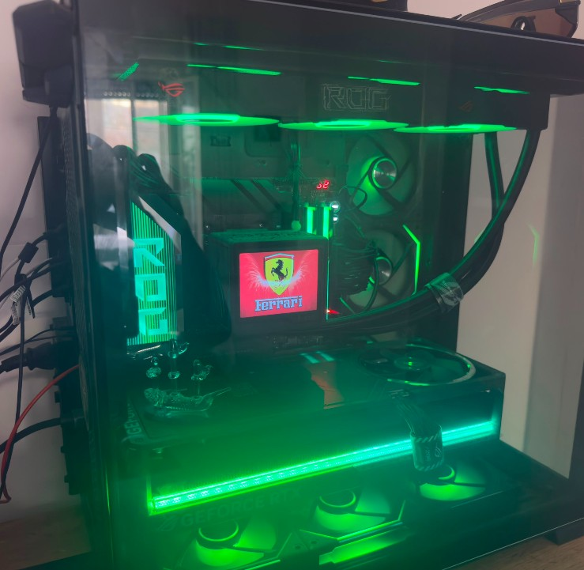
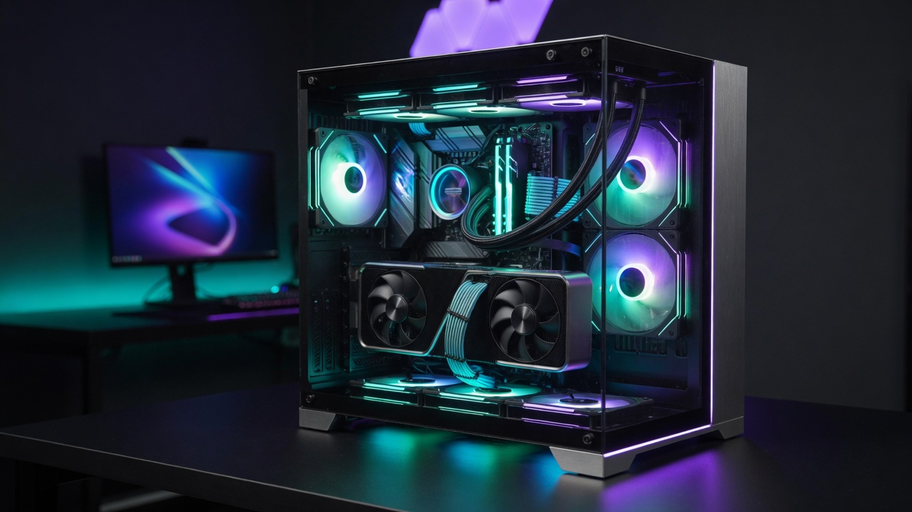
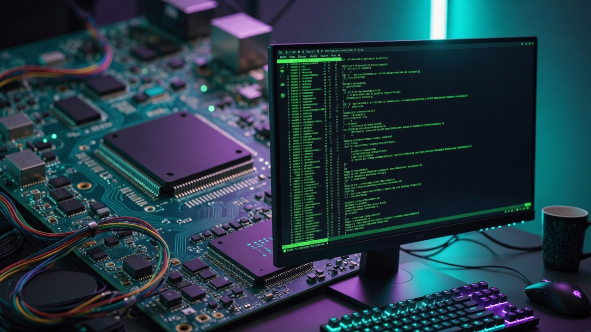
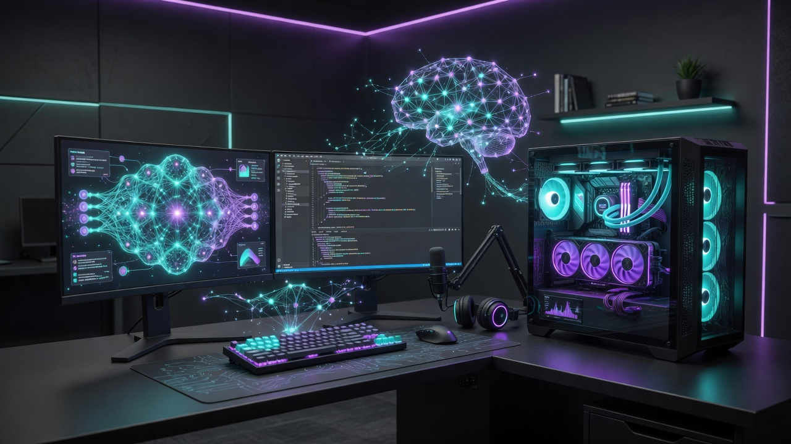

🌐
Web Designer
Modern websites, portfolios and professional blogs.
- HTML, CSS, JavaScript
- UX/UI and responsive design
- SEO and semantic structure
- Dark mode and performance

Hardware, operating systems, web development and AI automation — technical skills applied with professional methodology.

Hands-on passion for hardware and software: I build PCs from scratch, configure multi-platform operating systems, design modern websites and build local AI automations.
Full ability to assemble a complete PC from scratch — from component selection and cable management to advanced BIOS/UEFI configuration.

Custom gaming workstation — ROG chassis, liquid cooling, green RGB lighting and Ferrari-themed display mod. Full assembly with cable management and airflow tuning.

Powerful GPU, 64GB+ RAM, NVMe for datasets
Balanced CPU/GPU, quiet cooling
Multi-core, abundant RAM, IOMMU
Multi-monitor, fast SSDs, stable environment
Full setup of Windows, Linux and macOS environments — including dual-boot, WSL2 and advanced troubleshooting.


Integration of powerful hardware, flexible OS environments and local AI automation for end-to-end productive workflows.
Modern websites, portfolios and professional blogs.
Local agents and automated workflows with LLMs.
Professional hardware assembly and optimisation.
Cross-platform automation and troubleshooting.